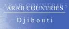

![Djibouti [ Gibuti ] Republic of Djibouti](djf.gif)
The Country & People of Djibouti
This page contains links to sites in Djibouti and Djibouti related sites.
For MiddleEast, North Africa, Arab and regional information visit Arab Countries
Hints:
- Use the "FIND" function in the Edit menu of your browser to search the page
- Use translating services in Chrome or Bing Bar in Internet Explorer to view page and/or linked websites in your language
General Info
* Business
* Culture
* Education
* History
* Media
* Organizations
* Travel
* Gateways
* Arab Countries
Djibouti, officially Republic of Djibouti, republic (2005 est. pop. 477,000), c.8,900 sq mi (23,057 sq km),E Africa, bordered by Eritrea (N), Ethiopia (W, S), Somalia (Se), and the Gulf of Aden (e). Djibouti is the capital. Largely a stony desert, the country is economically underdeveloped. Nomadic animal-herding is the chief occupation, but most revenue is derived from the port of Djibouti and the country's free-trade zone status. Hides, cattle, and coffee (transshipped from Ethiopia) are the major exports. Industries include shipbuilding and repair and food processing. The population is about 40% Issa (of Somali origin) and 35% Afar (of Ethiopian origin), with the rest largely other Somali tribes, Arabs, and Ethiopian refugees. Both Issas and Afars are Muslim and speak Cushitic languages. French and Arabic are the official languages.
History
Djibouti is important for its strategic location on the strait between the Gulf of Aden and the Red Sea. France obtained a foothold in the area in 1862 and organized it as a colony, French Somaliland, in 1896. The colony gained territorial status in 1946 and was renamed the French Territory of the Afars and the Issas in 1967.
In a 1967 referendum the Afars voted to continue ties with France, while the Issas voted for independence and eventual reunion with Somalia.
Djibouti became independent in 1977 under Pres. Hassan Gouled Aptidon, who established a single-party state in 1981. The country has been adversely affected by warfare in and between neighboring Ethiopia and Somalia.
Tensions between Afars and the Issa-dominated government led to an Afar rebellion in 1991 that finally ended in 2000.
Limited multiparty elections were restored under a 1992 constitution and Gouled was reelected in 1993.
In 1992 a constitution allowing for a limited multiparty state was approved by Djibouti’s voters.
In 1993, Gouled was reelected in the country’s first multiparty elections, which were widely boycotted by the opposition.
The 1999 presidential election was won by Ismail Omar Guelleh, the governing party candidate.
The French remain a strong military and technical presence in Djibouti, and the United States has also established (2002) a base in the strategically located nation.
In 2003 the government sought to expel an estimated 100,000 illegal immigrants, largely Ethiopians and Somalis, from the country. The move was prompted by security and unemployment concerns. Guelleh was reelected in 2005, but the opposition refused to contest the election, believing that the government would rig the vote.
In June, 2008, fighting erupted briefly between Djibouti and Eritrea near the Bab el Mandeb; Djibouti had accused Eritrea of occupying Djiboutian territory there earlier in the year, and relations remained tense in subsequent months.
In Jan., 2009, the UN Security Council demanded Eritrea to withdraw its forces from the disputed area, but Eritrea refused to comply; Djibouti had previously withdrawn.
Under an agreement signed in June, 2010, that called for Qatar's emir to mediate between Djibouti and Eritrea, Eritrea withdrew from disputed areas it had occupied.Also in 2010, the constitution was amended to permit Guelleh to run for more than two terms, and he was reelected in Apr., 2011. The opposition, which had boycotted the 2008 legislative elections and the 2011 presidential election, fielded candidates in the 2013 legislative elections, but Guelleh's party claimed three fourths of the seats, leading to opposition charges of fraud and protests in the capital as well as an opposition boycott of the legislature that continued through 2014. Recurring droughts beginning in the second half of the 2000s had by 2014 devastated the subsistence pastoralism on which many of Djibouti's people had depended, leading to chronic malnutrition in nearly a third of the population. Due to the resulting population exodus from rural areas, some 85% of the population resided in the capital by 2014.
********
Copyright (c) 2012 Columbia University Press.
Used by permission of Columbia University Press.
General Info
Cities, towns, municipalities, places, flag, maps, useful Information....
Business
economy, reports, statistics, banks, directories, jobs, investment, promotion....
Culture
General resources, heritage, art, literature, photography, cinema, music, song, dance, cultural, scientific,
environmental, sporting entities & info....
Education
Schools, colleges, academies, universities, polytechnics, institutions, research, resources, projects....
History
Ancient & modern history, human rights, politics & political parties, related sites, articles....
Media
Newspapers, magazines, news, newsletters, news agencies, radio, TV, internet, articles, reports, cartoons....
Organizations
Government, ministries, overseas missions, embassies, corporations, organizations, industrial entities, centers,
public hospitals, institutions, societies, foreign entities....
Travel
Airlines, air, sea & coach charters services, travel, tours, guides, hotels, resorts, inns, hostels, health,
travel tips, weather....
Gateways
Gateways, search engines and directories to country related sites and information....
Arab Countries
Arab World: Middle East, North Africa, Arab and regional information. Resources to other Arab countries....
About Djibouti
General Information Also see Travel
- ArabInfo Overview, government, history, links
- ArabNet Overview, history, geography, business, culture, government, transport, tour guide, links
- Atlapedia Geography, climate, people, demography, religion, education, modern history, currency, other information....
- BBC Country Profile Overview, facts, leaders, media, links
- Britannica.Com Country info, land, people, economy, society, government, history, culture, maps, statistics, links....
- CIA World Factbook Map, geography, people, government, economy, communications, transportation, military, issues
- Country Reports Economy, defense, geography, government, people, anthem, map, news, weather, links....
- Djibouti Kiosk Djibouti info, history, geography, culture, attractions, government, songs, practical information, getting around, business directory
- Encarta OnLine Info, land & resources, population, economy, government, history, other related items, links....
- Expedia Almanac, fast facts, communications, on business, health & safety, transportation, traveler's directory
- Info Please General info, map, geography, government, history, land & people....
- Nation By Nation Info, government, human rights, news, geography, history, people, links....
- World66 General info, cities, history, people, economy, getting around, getting there, links....
Cities, Towns, Municipalities & Places
Flag, Maps, Emblems and other information....
- Cellular News Cellular coverage map, systems, frequencies....
- Ethnologue Languages
- Flag Description, meaning, history, interesting facts and other flags
- FlagExplanation, historical, military & political flags....
- World Atlas A brief description, fast facts, flag, landforms, maps, traveller info, weather
- World Clock Local time, sunrise, sunset, GMT offset, daylight saving....
- World Paper Money Paper currency since 1920
General Info
* Business
* Culture
* Education
* History
* Media
* Organizations
* Travel
* Gateways
* Arab Countries
Business and Economy
General, Economy, Reports & Statistics
- Australian Department of Foreign Affairs and Trade Fact sheet (pdf) & travel information....
- Bilateral Relations with Japan Diplomatic, investment, economic cooperation, residents....
- Djibouti and the IMF Position in the fund, reports....
- Djibouti Business Awards An annual celebration of the best of the best that the Djibouti business community has to offer
- MBendi Business information, news, industries, events
- Muslim Trade Network Trade reference directory and guide....
- Ports Focus Ports, harbours, marinas....
- US Department of Energy Analysis, information, oil, natural gas, coal, electricity....
- World Bank
Overview, news & events, data & statistics, publications & reports, development topics, projects & programs, Public Information Center
- World Trade Organization - WTO
Provides trade statistics, goods schedules, services schedules and MFN exemptions, trade policy reviews, dispute cases, and notifications
Banks
- Central Bank of Djibouti
Directories, Job Opportunities
- Annuaires Afrique - Djibouti Votre Annuaire Telephonique Local et Yellow Pages sur l'Internet
Investment & Promotion....
- National Agency for the Promotion of the Investments
- Societe Immobiliere de Djibouti Utile aux investisseurs etrangers qui seraient interesses de faire des affaires à Djibouti
General Info
* Business
* Culture
* Education
* History
* Media
* Organizations
* Travel
* Gateways
* Arab Countries
Art, Culture & Sport
General resources, Heritage....
Art, Literature, Photography, Cinema....
- Internet Movie Database Movie & TV reports
- Guide to Theatres Activity, companies, places, events, festivals....
Music, Song & Dance....
Cultural, Scientific, Environmental, Sporting Entities & Info
- Animal Info Threatened species, environmental and social data
- AquaStat Information on quantity and quality of freshwater and its availability
General Info
* Business
* Culture
* Education
* History
* Media
* Organizations
* Travel
* Gateways
* Arab Countries
Education
Schools, Colleges, Academies, Universities & Polytechnics
- Lycee d’etat Un enseignement secondaire de type general et tertiaire
- Universitaire de Djibouti
Institutions & Organizations
- Association pour le developpement des Technologies de l'Informatique à Djibouti ADTID
Research, Resources & Projects
General Info
* Business
* Culture
* Education
* History
* Media
* Organizations
* Travel
* Gateways
* Arab Countries
History, Human Right & Politics
Ancient & Modern....
- BBC Timeline A chronology of key events
- Political Geography Land and people, economy, government, history....
- World Statesmen Flags, chronology, rulers, governors, ministers, commissioners....
Human Rights, Politics & Political Parties....
- Amnesty International News, reports, urgent action. Latest annual report....
- Association pour le Respect des Droits de l'Homme à Djibouti ARDHD
- US Department of State Country reports on human rights practices
Related Sites, Articles....
General Info
* Business
* Culture
* Education
* History
* Media
* Organizations
* Travel
* Gateways
* Arab Countries
Visit Arab Media for satellite stations & Arab newspapers
Media
Newspapers, Magazines....
- La Nation Bi-hebdomadaire djiboutien d'informations generales
OnLine News, Newsletters, News agencies....
- Agence Djiboutienne d'Information
- AllAfrica.Com News plus, news wire....
- Djibnet, Nomad's Land Online news and guide to Djibouti, Somalia, Ethiopia, Eriterea
- Washington Post News & references
Radio, TV, Internet....
Articles, Reports, Cartoons....
General Info
* Business
* Culture
* Education
* History
* Media
* Organizations
* Travel
* Gateways
* Arab Countries
Visit Arab Organizations for Pan-Arab, Middle East, North Africa and regional organizations
Government & Organizations, Corporations, Societies....
Government, Ministries, Councils....
- Chiefs of State and Cabinet Members
- Political Leaders Dates and figures of the leadership since 1977 (with pictures)
- La Presidence
- Ministere de la Communication et de la Culture Charge des Postes et des Telecommunications
- Ministere de la Femme Ministere delegue charge de la Promotion de la Femme, du Bien Etre Familial et des Affaires Sociales
- Office du Tourisme de Djibouti
- Republique de Djibouti
Official site. All you want to know about Djibouti. Government, culture, songs, comedy, education, images....
Corporations, Organizations, Public Hospitals and Industrial Entities
- Djibouti Telecom Services, support, history, RBS system....
- Dot DJ Administer the Registry and interfaces the specialized registring services
Centers, Institutions, Societies....
Network Information Center Services, support, history, RBS system....
Foreign Entities
- World Food Programme Fight against global hunger....
- World Health Organization 1 Summary of health measures and human resources
- World Health Organization 2 Tobacco & health, socio-economic situation
General Info
* Business
* Culture
* Education
* History
* Media
* Organizations
* Travel
* Gateways
* Arab Countries
Travel & Tourism
Airlines, Air, Sea & Coach Charters services
- Daallo Airlines Passenger and cargo airline for Somalia and Djibouti
Travel, Tours, Guides.... More country info
- Scuba Travel - Diving In The Red Sea A great trip for divers and non divers. The emphasis is on enjoying the whaleshark encounters
- Africa Guide Introduction, visitor info, accommodation, tours....
- Lonely Planet Travel information, maps, photos, background historical and cultural information
- Travel Guide General & trave info, money, duty free, health, accommodation, visas....
- World Travel Guide Travel information, regions & places....
Hotels, Resorts, Inns, Hostels....
- All Hotels Hotels, description & rates
Health & Travel Tips
- Foreign & Commonwealth Office Travel information, country advise, latest travel updates....
- Travel Document Systems Passports, visas, travel documents
- US Consular Information Warning, visa, security, health, crime/drug penalties....
Weather....
- Tide Calendar Tide times, sunset, sunrise and global position
- Weather Underground Temperature, humidity, pressure and conditions by city
- Yahoo Weather By city. Forcast, sunrise, sunset, humidity, wind, dewpoint....
General Info
* Business
* Culture
* Education
* History
* Media
* Organizations
* Travel
* Gateways
* Arab Countries
Visit Arab Gateways for Arab and other country links
Gateways to Djibouti
- Abyssinia Gateway Links....
General Info
* Business
* Culture
* Education
* History
* Media
* Organizations
* Travel
* Gateways
* Arab Countries
Please link to this page.
https://www.hejleh.com/countries/djibouti.html
For comments, reports of deadlinks and adding your URL
Names, pictures and logos are the copyright of their respective owners.
(C)Copyright 1998-2017 Mazen Hejleh. All rights reserved.